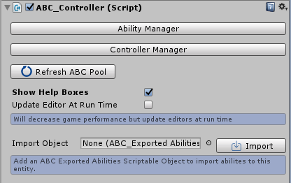

Inspector Settings
Overview
ABC Controller is required for creating and activating abilities, targetting objects, managing AI, ability grouping and more. The component once attached can open up 2 editor windows for more config. There is also additional settings in the inspector window which are detailed below.

Show Help Boxes
If ticked then blue help boxes will appear all over the configuration with setting information and tips.
Update Editor At Run Time
If enabled then the configuration window will update when the window isn’t in focus. This will decrease performance but is useful to use when checking for value/setting changes during play (as the values will update without having to keep clicking the configuration window). If disabled then the window will update whilst it is focused.
Refresh ABC Pool
When the game loads all objects (graphics etc) which have been setup for the ABC system will be created and placed in a “pool” increasing performance (as no objects will be instantiated during play). Pressing this button will clear the object pool and regenerate the objects. This button should be pressed if any object/graphic settings are changed during play otherwise the old objects will still be used. More information on pooling can be found.
Ability Manager
Clicking this button will load the Ability Manager Configuration Window. This can also be opened from Windows > ABC > Ability Manager. More information on the settings within the Ability Manager Window can be found by clicking the following link: Ability Manager Documentation.
Controller Manager
Clicking this button will load the Controller Manager Configuration Window. This can also be opened from Windows > ABC > Controller Manager. More information on the settings within the Controller Manager Window can be found by clicking the following link: ABC Controller Documentation.
Show Quick Edit List
If ticked then a list will appear showing the entities abilities which have been created. The ability name and key/button trigger can be modified and there is also an export box which if ticked will allow for the ability to be exported.
Import Abilities
This section allows for the import of abilities from other ABC Controller entities, essentially copying abilities from one entity to another. When abilities are exported a scriptable object is created. Adding an exported scriptable object file to the “Import Object” field and pressing the “Import” button will import all the chosen abilities to the entity. More information on exporting abilities and creating scriptable objects can be found by clicking the following link: Exporting Abilities